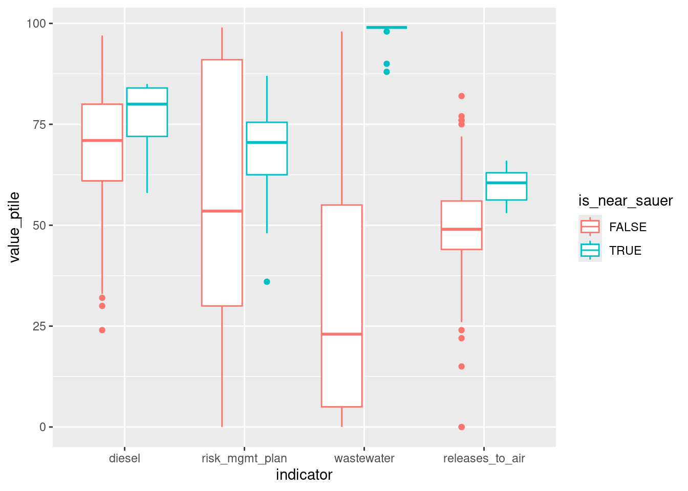

19. Project 2 troubleshooting
Spatial joins
Here’s how you can join sf points with sf polygons in order to find, for example, the number of points in each polygon. This example is brownfields per county. Like with other joins, it matters which is on the left & which is on the right. sf::st_join has an argument to change from a left join to an inner join by setting left = TRUE (the default) to left = FALSE, respectively. The geometry after the join will follow the type of object on the left.
counties_sf <- tigris::counties(state = "24", cb = TRUE) |>
select(county = NAMELSAD)
# need to get into same crs
brownfields_transform <- st_transform(brownfields_sf, st_crs(counties_sf)) |>
# selecting just a subset of columns to make it easier to see what's going on
select(site = name, is_archived)
st_join(counties_sf, brownfields_transform) |>
head() # polygon join point = polygon| county | site | is_archived | geometry | |
|---|---|---|---|---|
| 60 | Baltimore County | Sauer Dump | FALSE | MULTIPOLYGON (((-76.3257 39… |
| 60.1 | Baltimore County | Aviation Station | FALSE | MULTIPOLYGON (((-76.3257 39… |
| 60.2 | Baltimore County | 68th Street Dump/ East Baltimore Dumping Complex | FALSE | MULTIPOLYGON (((-76.3257 39… |
| 60.3 | Baltimore County | Industrial Enterprises | FALSE | MULTIPOLYGON (((-76.3257 39… |
| 60.4 | Baltimore County | Bear Creek Sediments | FALSE | MULTIPOLYGON (((-76.3257 39… |
| 61 | Worcester County | Campbell Soup Property | TRUE | MULTIPOLYGON (((-75.66061 3… |
| site | is_archived | geometry | county |
|---|---|---|---|
| FNT Realty Cherry Hill | FALSE | POINT (-76.6335 39.2574) | Baltimore city |
| Bush Valley Landfill | FALSE | POINT (-76.2619 39.4671) | Harford County |
| 101 Garrett Street | FALSE | POINT (-76.6143 39.2376) | Baltimore city |
| Northhampton, City of Largo | TRUE | POINT (-76.8279 38.8806) | Prince George’s County |
| Shellfish Seafood, Ltd. | FALSE | POINT (-75.688 38.2008) | Somerset County |
| Former PPG - Works No. 7 (Pittsburg Plate Glass) | TRUE | POINT (-78.7479 39.5914) | Allegany County |
There are 150 rows in the brownfields data, but the first join, the dataframe with points joined onto polygons, has 153 rows. That’s because there are 3 counties with no brownfields. To deal with that, I’ll redo the join with left = FALSE to make it an inner join, so I don’t have any counties without brownfields.
sites_per_county <- st_join(counties_sf, brownfields_transform, left = FALSE) |>
# drop geometry---just want data frame for now
st_drop_geometry() |>
group_by(county) |>
summarise(n_total_sites = n(),
# throwing in another example aggregation
n_open_sites = sum(!is_archived))
# join back onto counties shape, so every county has a polygon with a count
# that makes sure we get a true 0 observation for counties without sites
sites_per_county_sf <- counties_sf |>
left_join(sites_per_county, by = "county") |>
# fill in 0 for counties with no observations
mutate(across(n_total_sites:n_open_sites, \(x) tidyr::replace_na(x, 0)))
ggplot(sites_per_county_sf) +
geom_sf(aes(fill = n_open_sites), color = "black", linewidth = 0.2) +
scale_fill_distiller(palette = "BuPu", direction = 1) +
labs(title = "Number of current brownfields by county")Maybe a more meaningful thing to do would be a rate, such as brownfields per 100,000 residents or brownfields per square mile, using data from the ACS dataset.
sites_per_county_sf |>
left_join(acs |> select(name, total_pop, area_sqmi), by = c("county" = "name")) |>
mutate(open_sites_per_100k = (n_open_sites / total_pop) * 100000) |>
ggplot() +
geom_sf(aes(fill = open_sites_per_100k), color = "black", linewidth = 0.2) +
scale_fill_distiller(palette = "BuPu", direction = 1) +
labs(title = "Current brownfields per 100k residents by county")If instead we were interested in the points themselves but wanted to know what counties they were each in, a join with brownfields on the left would be helpful. For this example it wouldn’t be super useful, but for other project ideas (such as finding points within buffers) it could be.
Lumping factor levels
If you have a variable with several values you want to collapse into one, the easiest way to do this is to make it a factor if it isn’t already, then use one of forcats’ helper functions.
With a character column, we can use fct_other or the various fct_lump_* functions to select which levels to keep; everything else gets dumped into the “other” category. The advantage of doing this with factors (as opposed to character vectors) is that factor levels have an order, and these functions will automatically put the “order” level last. Here are a few of those functions:
# way more medium values than would be useful
art_types <- art_sf |>
st_drop_geometry() |>
filter(!is.na(medium))
art_types |>
count(medium, sort = TRUE) |>
mutate(share = n / sum(n))| medium | n | share |
|---|---|---|
| mural | 147 | 0.2639138 |
| bronze | 83 | 0.1490126 |
| painted steel | 18 | 0.0323160 |
| steel | 17 | 0.0305206 |
| concrete | 14 | 0.0251346 |
| aluminum | 11 | 0.0197487 |
| mural (non-city funded) | 11 | 0.0197487 |
| sculpture | 11 | 0.0197487 |
| marble | 10 | 0.0179533 |
| ceramic tiles | 9 | 0.0161580 |
| limestone | 9 | 0.0161580 |
| stainless steel | 9 | 0.0161580 |
| weathering steel | 8 | 0.0143627 |
| corten steel | 7 | 0.0125673 |
| oil/canvas | 5 | 0.0089767 |
| stained glass | 5 | 0.0089767 |
| ceramic tile | 4 | 0.0071813 |
| cor ten | 4 | 0.0071813 |
| fabric wall hanging | 4 | 0.0071813 |
| fiber | 4 | 0.0071813 |
| granite | 4 | 0.0071813 |
| acrylic | 3 | 0.0053860 |
| acrylic, wood | 3 | 0.0053860 |
| painted aluminum | 3 | 0.0053860 |
| polyester resin | 3 | 0.0053860 |
| acrylic paint | 2 | 0.0035907 |
| acrylic windows | 2 | 0.0035907 |
| brick | 2 | 0.0035907 |
| ceramics | 2 | 0.0035907 |
| chrome | 2 | 0.0035907 |
| copper | 2 | 0.0035907 |
| corten | 2 | 0.0035907 |
| epoxy resin | 2 | 0.0035907 |
| fiberglass, stainless ste | 2 | 0.0035907 |
| metal | 2 | 0.0035907 |
| metal sculpture | 2 | 0.0035907 |
| metal wall sculpture | 2 | 0.0035907 |
| mixed media | 2 | 0.0035907 |
| mosaic tile | 2 | 0.0035907 |
| neon | 2 | 0.0035907 |
| stone aggregate | 2 | 0.0035907 |
| terra cotta | 2 | 0.0035907 |
| acrylic on canvas | 1 | 0.0017953 |
| acrylic window | 1 | 0.0017953 |
| aggregate stone | 1 | 0.0017953 |
| aluminum and bronze | 1 | 0.0017953 |
| aluminum plate | 1 | 0.0017953 |
| aluminum relief | 1 | 0.0017953 |
| aluminum wall relief | 1 | 0.0017953 |
| aluminum, corten, stainle | 1 | 0.0017953 |
| aluminum, plexiglas, mirr | 1 | 0.0017953 |
| bas relief | 1 | 0.0017953 |
| black tennensee marble | 1 | 0.0017953 |
| brass | 1 | 0.0017953 |
| brick and concrete | 1 | 0.0017953 |
| brick sculptured wall | 1 | 0.0017953 |
| brick wall hanging | 1 | 0.0017953 |
| bridge repainting | 1 | 0.0017953 |
| bronze & marble | 1 | 0.0017953 |
| bronze and granite | 1 | 0.0017953 |
| bronze and unpolished granite | 1 | 0.0017953 |
| bronze and welded copper | 1 | 0.0017953 |
| bronze bust, stainless steel pedestal | 1 | 0.0017953 |
| bronze coated steel | 1 | 0.0017953 |
| bronze1992/orig.cast iron | 1 | 0.0017953 |
| burnished aluminum | 1 | 0.0017953 |
| bus shelters | 1 | 0.0017953 |
| cast aluminum | 1 | 0.0017953 |
| cast granite | 1 | 0.0017953 |
| cast iron | 1 | 0.0017953 |
| cast stone | 1 | 0.0017953 |
| cement | 1 | 0.0017953 |
| ceramic bas relief | 1 | 0.0017953 |
| ceramic tree | 1 | 0.0017953 |
| clay | 1 | 0.0017953 |
| collage | 1 | 0.0017953 |
| concrete aggregate | 1 | 0.0017953 |
| concrete and corten steel | 1 | 0.0017953 |
| concrete and glass | 1 | 0.0017953 |
| concrete and rubber | 1 | 0.0017953 |
| concrete with ceramic til | 1 | 0.0017953 |
| concrete, aluminum, steel | 1 | 0.0017953 |
| concrete, steel, aluminum | 1 | 0.0017953 |
| concrete/ stone | 1 | 0.0017953 |
| copper and stainless steel | 1 | 0.0017953 |
| cor-ten & stainless steel | 1 | 0.0017953 |
| corten & steel | 1 | 0.0017953 |
| corten steel and aluminum | 1 | 0.0017953 |
| etched glass | 1 | 0.0017953 |
| exposed aggregate | 1 | 0.0017953 |
| fiberglass | 1 | 0.0017953 |
| fiberglass & clock | 1 | 0.0017953 |
| forged steel | 1 | 0.0017953 |
| formica frames | 1 | 0.0017953 |
| free-standing sculpture | 1 | 0.0017953 |
| galvanized playground str | 1 | 0.0017953 |
| glass-reinforced polyester resin | 1 | 0.0017953 |
| granite & steel | 1 | 0.0017953 |
| granite and aluminum? | 1 | 0.0017953 |
| gunite | 1 | 0.0017953 |
| iron | 1 | 0.0017953 |
| limestone and cedar | 1 | 0.0017953 |
| limestone/stainless steel | 1 | 0.0017953 |
| mayari r steel | 1 | 0.0017953 |
| memorial | 1 | 0.0017953 |
| metal (bronze?) | 1 | 0.0017953 |
| metalic sculpture | 1 | 0.0017953 |
| mosaic | 1 | 0.0017953 |
| mosaic tile/concrete sculpture | 1 | 0.0017953 |
| mosaic tiles | 1 | 0.0017953 |
| oil on canvas | 1 | 0.0017953 |
| oil on canvas, framed | 1 | 0.0017953 |
| oil/masonite | 1 | 0.0017953 |
| painted corten plate steel | 1 | 0.0017953 |
| painted metal | 1 | 0.0017953 |
| painted mural | 1 | 0.0017953 |
| painted steel tubing | 1 | 0.0017953 |
| painting | 1 | 0.0017953 |
| photographic display case | 1 | 0.0017953 |
| photographic emulsion | 1 | 0.0017953 |
| photographic mural | 1 | 0.0017953 |
| photographic relief piece | 1 | 0.0017953 |
| plaques | 1 | 0.0017953 |
| polished steel | 1 | 0.0017953 |
| porcelain enameling iron | 1 | 0.0017953 |
| portrait | 1 | 0.0017953 |
| print, wood | 1 | 0.0017953 |
| quarry tile floor | 1 | 0.0017953 |
| restoration of paintings | 1 | 0.0017953 |
| sandstone | 1 | 0.0017953 |
| sculptural garden | 1 | 0.0017953 |
| sculptural panel and mura | 1 | 0.0017953 |
| sculpture - neon, aluminum & resin | 1 | 0.0017953 |
| sculpture, painted steel | 1 | 0.0017953 |
| sculptured display cases | 1 | 0.0017953 |
| sheet bronze doors | 1 | 0.0017953 |
| slate & cor ten | 1 | 0.0017953 |
| stained glass mobile | 1 | 0.0017953 |
| stainglass | 1 | 0.0017953 |
| stainless steel / aluminum? | 1 | 0.0017953 |
| stainless steel and alumi | 1 | 0.0017953 |
| stainless steel and bronz | 1 | 0.0017953 |
| steel & steel cable | 1 | 0.0017953 |
| steel and aluminum | 1 | 0.0017953 |
| steel and corten | 1 | 0.0017953 |
| steel, aluminum, cable,castconcrete | 1 | 0.0017953 |
| steel, forged iron, wood | 1 | 0.0017953 |
| stone | 1 | 0.0017953 |
| stone (or terracotta) | 1 | 0.0017953 |
| tactile relief mural | 1 | 0.0017953 |
| tennenese limestine | 1 | 0.0017953 |
| terra-cotta | 1 | 0.0017953 |
| tiles | 1 | 0.0017953 |
| urns | 1 | 0.0017953 |
| wall hangings | 1 | 0.0017953 |
| welded metal sculpture | 1 | 0.0017953 |
| welded metal wall sculptu | 1 | 0.0017953 |
| wood | 1 | 0.0017953 |
| wood relief | 1 | 0.0017953 |
Only keep 3 most common levels:
art_types |>
mutate(medium_grps = forcats::fct_lump_n(medium,
n = 3,
other_level = "other types")) |>
count(medium_grps)| medium_grps | n |
|---|---|
| bronze | 83 |
| mural | 147 |
| painted steel | 18 |
| other types | 309 |
Only keep levels with at least 12 observations:
art_types |>
mutate(medium_grps = forcats::fct_lump_min(medium,
min = 12,
other_level = "other types")) |>
count(medium_grps)| medium_grps | n |
|---|---|
| bronze | 83 |
| concrete | 14 |
| mural | 147 |
| painted steel | 18 |
| steel | 17 |
| other types | 278 |
Only keep levels I’ve specifically chosen (let’s say I’m interested in a few sculpture types):
Booleans / logical values
Going back over the bit of boolean math we talked about: logical values (true / false) can translate in most (all?) languages to numeric values (1 / 0). That gives you some shortcuts when you need to aggregate data based on logical values.
Encoding data to size
If you map data onto the size of a point, encode that information in the point’s area, not its radius. Perception studies show that area is what we’re reading more than radius, and you want your data to have a 1 to 1 relationship with the thing you’re encoding to (data-to-ink ratio). The default in ggplot is radius, but you can override that with scale_size_area. Normally, size scales (e.g. scale_size_continuous) would have an argument range for the smallest and largest values to use; for area, you give max_size as a single number. If you have a 0 in your data, it will have an area of 0, unlike when using the continuous scale.
x_area <- data.frame(location = 1:4,
value = c(1, 0, 2, 5))
# why would a value of 0 have a point?? We wouldn't draw a bar in a bar chart
# for a 0 value
ggplot(x_area, aes(x = location, y = 1, size = value)) +
geom_point() +
scale_size_continuous(range = c(1, 10))# still kinda has a dot for 0 but that might be a graphic device artifact..?
ggplot(x_area, aes(x = location, y = 1, size = value)) +
geom_point() +
scale_size_area(max_size = 10)Two-way contingency table as mosaic plot
Two true/false variables (or other qualitative variables) can be shown as a contingency table with a mosaic plot. Adding facets gives you the option of more than two dimensions.
current_brownfields <- brownfields_sf |>
st_drop_geometry() |>
filter(!is_archived) |>
count(is_ongoing_assess, is_ongoing_remed)
# number of sites currently being assessed, remediated, neither, both
current_brownfields| is_ongoing_assess | is_ongoing_remed | n |
|---|---|---|
| FALSE | FALSE | 101 |
| FALSE | TRUE | 4 |
| TRUE | FALSE | 7 |
| TRUE | TRUE | 1 |
ggplot(current_brownfields) +
geom_mosaic(aes(x = product(is_ongoing_assess), fill = is_ongoing_remed, weight = n))Creating a new spatial variable
For things that are related to distance, such as accessibility (e.g. bus stops) or hazards (e.g. brownfields) if can be useful to create a variable flagging whether a location is within some certain distance of a target. You can do this with spatial overlays. The locations you use as your unit of analysis don’t have to be points that may be within some buffer of the target; they could also be an area like census tracts.
Here’s a local superfund site (the Sauer dump in Baltimore County) with a 2 mile radius around it. We can create a dummy variable denoting whether locations are in that buffer, join the buffer to our unit of analysis (tracts), then use that flag as a way to split up the data.
There are a couple ways to join spatial data—st_join will join data from the sf object y onto the sf object x; this can be a left join (left = TRUE, the default) or an inner join (left = FALSE). The geometry of x stays the same.
# baltimore-area tracts
balt_tracts <- tracts_sf |>
# need same crs
st_transform(2248)
# left join keeps all tracts
st_join(balt_tracts, dump_buffer, left = TRUE) |>
select(is_near_sauer) |>
plot(main = "left join")# inner join keeps only tracts in buffer
st_join(balt_tracts, dump_buffer, left = FALSE) |>
select(is_near_sauer) |>
plot(main = "inner join")
Calculating the intersection of geometries instead (st_intersection) changes the geometry of x based on how it intersects with y.

To make a variable that allows us to compare some data for tracts within the buffer versus those outside the buffer, we want the spatial left join. For the NAs that result from the join, fill in FALSE.
dump_tracts <- st_join(balt_tracts, dump_buffer, left = TRUE) |>
mutate(is_near_sauer = tidyr::replace_na(is_near_sauer, replace = FALSE))
dump_tracts |>
st_drop_geometry() |>
count(is_near_sauer)| is_near_sauer | n |
|---|---|
| FALSE | 588 |
| TRUE | 18 |
dump_tracts |>
left_join(ej_natl, by = c("geoid" = "tract")) |>
filter(indicator %in% c("diesel", "releases_to_air", "risk_mgmt_plan", "wastewater")) |>
ggplot(aes(x = indicator, y = value_ptile, color = is_near_sauer)) +
geom_boxplot()
Because these two groups are so skewed (only 18 tracts in the buffer), another chart that shows the distributions but also gives some sense of the group size might be more appropriate (beeswarm, density). You could do something similar with more than one buffer around more than one site, such as ACS variables split by whether a tract is within 2 miles of a superfund (NPL) site.
all_tracts_sf <- tigris::tracts(state = "24", cb = TRUE) |>
select(geoid = GEOID) |>
st_transform(2248)
npl_buffer <- brownfields_sf |>
filter(!is_archived,
site_type %in% c("npl", "both")) |>
st_transform(2248) |>
st_buffer(dist = 2 * 5280) |>
mutate(is_near_npl = TRUE) |>
group_by(is_near_npl) |>
summarise()
acs_x_npl <- all_tracts_sf |>
st_join(npl_buffer, left = TRUE) |>
mutate(is_near_npl = tidyr::replace_na(is_near_npl, FALSE)) |>
left_join(acs, by = c("geoid" = "name"))
acs_x_npl |>
select(geoid, is_near_npl, white, poverty, less_than_high_school, homeownership, foreign_born) |>
st_drop_geometry() |>
tidyr::pivot_longer(-geoid:-is_near_npl, names_to = "variable") |>
ggplot(aes(x = variable, y = value, color = is_near_npl)) +
geom_boxplot()